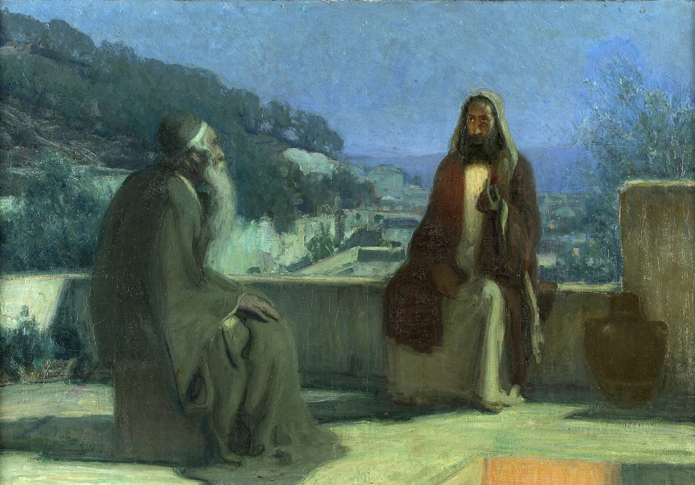
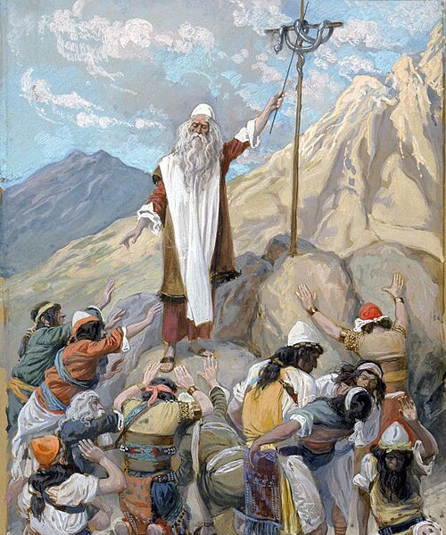

John 3
Born again
A respected teacher comes to Jesus by night and hears the best news in the world: God so loved the world.
Things to watch for
Keep these questions in the back of your mind as we read. We'll come back to every one of them at the end.
- The new birthWhat does it mean to be born again?
- Salvation (soteriology)Who can be saved, and how?
- God's loveWhy did God send his Son?
- Light and darknessWhy do people hide from the light?
- AssuranceCan a believer be sure he has eternal life?
- HumilityWhat does it look like to make much of Jesus?
Part one
Born again
Verses 1–13
A respected religious man comes to Jesus in the dark, with questions.
From night to day
Nicodemus was a Pharisee, a strict keeper of the law, and a “ruler of the Jews,” a member of the council of the Jews, the court of about seventy that ran their religious life. A top man. John shows him to us three times:
Comes privately, with questions. Calls Jesus “a teacher come from God.”
When the council wants Jesus arrested, he asks for a fair hearing. They mock him for it.
After the cross, he helps bury Jesus, bringing “about an hundred pound weight” of spices.
Lots of men first come to Jesus in the dark: alone, ashamed, at the end of the rope at two in the morning. Jesus never scolds Nicodemus for coming at night. He meets him there. And look where Nicodemus ends up: in broad daylight, standing with Jesus when it cost him something.
“Born again”
Nicodemus opened with a compliment. Jesus skipped right past it to the one thing he needed. He didn't need a better teacher. He needed a new birth, one that comes from above.
Nicodemus asks, “How can a man be born when he is old?” Plenty of men ask that today: I'm too old, too far gone, too set in my ways to start over. Jesus' answer is that you don't start yourself over. God does it.
Two births
Your first birth
Born of the flesh
Gives you physical life, from your parents. Flesh can only produce more flesh. You can improve it, but you can't make it into something it isn't.
Your second birth
Born of the Spirit
Gives you spiritual life, from God. The Holy Spirit makes you alive toward God and comes to live in you for good.
What about “water”? Many Bible teachers take it as the first, natural birth, which the next verse calls “born of the flesh.” Others hear God's promise in Ezekiel to wash his people and give them a new heart. Either way, verse 16 makes clear what brings the new birth: believing on Jesus.
“A new heart also will I give you, and a new spirit will I put within you: and I will take away the stony heart out of your flesh, and I will give you an heart of flesh.”
Ezekiel 36:26
Wind and Spirit
In Greek, one word means both wind and spirit: pneuma. “Listeth” means wants, pleases. Nobody tells the wind where to go.
You can't see the wind. You can't bottle it or steer it. But you can see what it does: the grass bends, the leaves fly.
The new birth is like that. Nobody watches it happen. But people notice the change: the man who used to lie now tells the truth, the man who used to run now shows up. That's the Spirit at work.
How can these things be?

“Master” here means teacher. In Greek Jesus calls him the teacher of Israel, as if he were the best-known Bible teacher in the land. He knew the Scriptures backward and forward, and he still didn't know this.
Knowing a lot about God isn't the same as being born of God. A man can know the Bible well and still need to be made new.
And who can tell us about heaven? Only the One who came from there (verse 13). Jesus isn't passing on a rumor. He's telling what he has seen.
Part two
Lifted up
Verses 14–21
The best-known verse in the Bible, and the reason Jesus came.

Look and live
In the wilderness, Israel grumbled against God, and poisonous snakes came into the camp. People were dying. God told Moses to put a brass serpent on a pole.
“…every one that is bitten, when he looketh upon it, shall live.”
Numbers 21:8
No medicine. No ritual. No earning it. A bitten man just had to look, and he lived.
“Even so must the Son of man be lifted up.” Jesus would be lifted up on a cross. Sin is the snakebite, and nobody can treat his own. The cure is to look to him in faith.
The whole gospel in one verse
- For Godthe greatest Lover
- so lovedthe greatest degree
- the world,the greatest number
- that he gavethe greatest act
- his only begotten Son,the greatest gift
- that whosoeverthe greatest invitation
- believeth in himthe simplest condition
- should not perish,the greatest rescue
- but havethe greatest certainty
- everlasting life.the greatest possession
“Whosoever” has no fine print. No man is too far gone, and no record is too long. If you're part of “the world,” you're included in this offer.
Two verdicts
Jesus didn't come to put the world on trial. The world was already under sentence. He came to get men out from under it.
“There is therefore now no condemnation to them which are in Christ Jesus, who walk not after the flesh, but after the Spirit.”
Romans 8:1
Coming out of the dark
Why do men stay away from the light? Not because they can't find it. Verse 20 says it straight: “lest his deeds should be reproved,” so nothing gets exposed.
Nicodemus came by night, but he came to the Light. That's the move. Come in the dark if you have to, but come.
Addiction grows in the dark: secrets, lies, covering tracks. Healing grows in the light. The things you're most afraid to bring out are the things God wants to deal with.
Part three
He must increase
Verses 22–36
John's followers are worried about losing the crowd. John isn't.
The best man's joy
At a Jewish wedding, the “friend of the bridegroom” was something like the best man. He helped arrange things and stood beside the groom. His joy wasn't the bride. It was seeing the groom get his bride. Jesus is the Bridegroom. John was glad to be his best man.
Pride says, “Look at me.” John says, “A man can receive nothing, except it be given him from heaven.” Everything you have is a gift. That's the cure for envy and ego, and it's a daily direction, not a one-time decision: more of him, less of me.
“Set to his seal”
In those days a man signed an important paper by pressing his own seal into hot wax. It meant: I stand behind this. It's true.
When you believe what Jesus says, you're putting your seal on God's word: God tells the truth. Faith isn't a feeling you work up. It's taking God at his word and signing your name to it.
“Hath,” not “someday”
He that believeth hath everlasting life. Not “might get it,” not “will find out at the end.” He has it now, from the moment he believes.
If it could run out, it wouldn't be everlasting. And for the man who refuses the Son, God's wrath abideth: it stays. The offer is still open today.
Points to remember
- The new birth“Ye must be born again” 3:7Not a fresh start you make, but a new life God gives by his Spirit.
- Salvation“That whosoever believeth in him” 3:15Anyone. Look to Jesus, lifted up on the cross, and live.
- God's love“For God so loved the world” 3:16He sent his Son to save the world, not to condemn it.
- Light and darkness“He that doeth truth cometh to the light” 3:21Come out of hiding. Even if you come by night, come.
- Assurance“Hath everlasting life” 3:36Believers have eternal life now, and it never runs out.
- Humility“He must increase, but I must decrease” 3:30Everything is a gift. Find your joy in making much of Jesus.
Question 1 of 6
The new birthWhat does it mean to be born again?
What verses tell us about this?
“Therefore if any man be in Christ, he is a new creature: old things are passed away; behold, all things are become new.”
2 Corinthians 5:17
Answer
It's a second birth, from above. Your first birth gave you physical life. The new birth, by God's Spirit, gives you spiritual life. It happens the moment you believe on Jesus. You don't clean yourself up first. God makes you new, and like wind in the grass, people start to see the difference.
Question 2 of 6
Salvation (soteriology)Who can be saved, and how?
What verses tell us about this?
“For by grace are ye saved through faith; and that not of yourselves: it is the gift of God: Not of works, lest any man should boast.”
Ephesians 2:8–9
“For whosoever shall call upon the name of the Lord shall be saved.”
Romans 10:13
Answer
Whosoever. Anyone at all. And the way is the same for everyone: believe in Jesus. Like the bitten Israelites who looked at the serpent and lived, you look to Jesus, lifted up on the cross for you. It's a gift received by faith, not a wage earned by works.
Question 3 of 6
God's loveWhy did God send his Son?
What verses tell us about this?
“But God commendeth his love toward us, in that, while we were yet sinners, Christ died for us.”
Romans 5:8
Answer
Because he loved the world. He didn't send Jesus to condemn anyone. The world was already condemned. He sent him to save it. And he loved us while we were still sinners, not after we got our act together.
Question 4 of 6
Light and darknessWhy do people hide from the light?
What verses tell us about this?
“But if we walk in the light, as he is in the light, we have fellowship one with another, and the blood of Jesus Christ his Son cleanseth us from all sin.”
1 John 1:7
Answer
Because the light shows what we've done, and we'd rather it stay hidden. But hiding keeps us sick. The man who comes to the light finds that Jesus' blood cleanses all sin. Nicodemus came by night, but he came. Come as you are, and come into the light.
Question 5 of 6
AssuranceCan a believer be sure he has eternal life?
What verses tell us about this?
“Verily, verily, I say unto you, He that heareth my word, and believeth on him that sent me, hath everlasting life, and shall not come into condemnation; but is passed from death unto life.”
John 5:24
“And I give unto them eternal life; and they shall never perish, neither shall any man pluck them out of my hand.”
John 10:28
Answer
Yes. Jesus says the believer hath everlasting life, right now, and has already passed from death to life. It's everlasting, so it can't run out. He promises his people shall never perish and no one can take them out of his hand. You can know.
Question 6 of 6
HumilityWhat does it look like to make much of Jesus?
What verses tell us about this?
Answer
It looks like John. When his crowd started leaving for Jesus, he didn't get jealous. He got glad. He knew everything he had was a gift from heaven, so he didn't need the spotlight. Like a best man at a wedding, his joy was seeing the Groom honoured. More of him, less of me.
Prayer requests
What can we pray about for you today?
“Casting all your care upon him; for he careth for you.”
1 Peter 5:7